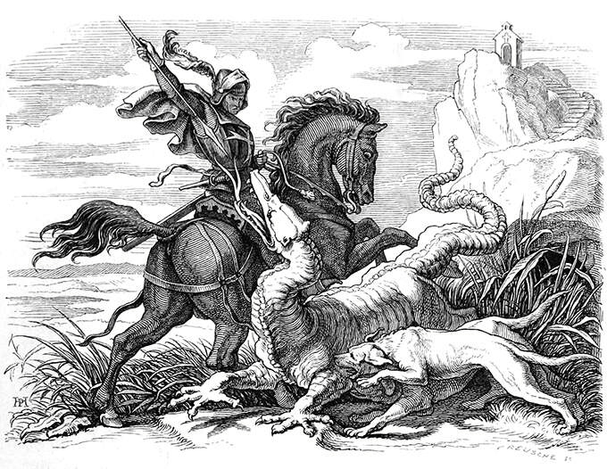

Exhume Basic
Exhume es un juego de rol de reglas ligeras del género de fantasía medieval. En Exhume un jugador toma el rol del Referí, quien controla y describe el mundo a los jugadores, quienes a su vez describen como actúan sus personajes.
Las reglas estan siendo desarrollado por el grupo de juego Dice Cultists.
Proximamente Disponible
De momento Exhume esta en desarrollo. Aún no está listo para llegar a todas las mesas de juego, a excepto por algunos afortunados quienes encontraron o recibieron una copia.
Para no perderte el lanzamiento de Exhume, no olvides seguir a Role Per Second en redes sociales.
Redes SocialesPreguntas Frecuentes
- ¿Qué es un juego de rol?
- - Puedes aprender que es un juego de rol viendo este video.
- ¿Qué necesito para jugar?
- - Una copia de las reglas de Exhume y un par de dados de 6 caras (los tipicos cuadritos) papel y lápiz.
- ¿Qué significa 1d6 o 3d6?
- - El numero de dados de 6 caras que tiens que lanzar. Ejemplo: 1d6, tirar 1 dado de 6 caras.